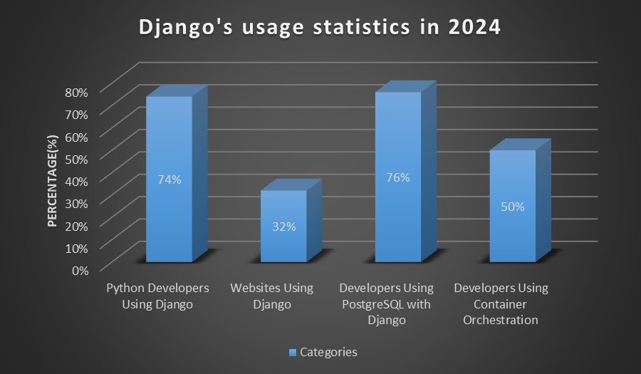

The underlying language to Django is actually Python which was founded by Guido van Rossum in 1991 primarily with the aim of providing language that is easy to read, understand and write. They will not give as much emphasis to readability or simplicity as this format will allow developers to write out complex thought processes in fewer lines. Inspiration for Python’s design was taken from languages such as ABC, C, and Modula-3; the language aims at newcomers as well as advanced level programmers.
Django web framework is created in 2005 by Adrian Holovaty and Simon Willison when both worked for a newspaper in New Zealand. Originally, its purpose was to streamline the creation of intricate Web 2.0 and database-based sites. The decision to create Django was based on the relevant objectives such as the need for exceptionally swift development, reusability and adhering to the principles of the DRY (or Don’t Repeat Yourself) principle. It is designed to adhere to the Model-View-Template (MVT) web application architecture to have steadfast maintenance and extendibility.
Consequently, since both are open-source, their qualities improve as a vast number of people can provide improvements, so they are versatile to be used in different domains such as web, machine learning, data analysis, and artificial intelligence, among others.
Python is an interpreted, script-based, prototype programming language which supports most of the paradigms. Due to the possibility of operating on sequential instruction it can be aligned mainly with the imperative/procedural. Django takes over this feature from Python and is aimed to simplify web development within this approach.
Python and Django are very popular for a number of reasons thanks to their flexibility for use in many different areas, simplicity, as well as their ability to be easily scalable. Below are the types of applications they excel at and sample examples:
Django is very popular in 2024 especially in web development. It is used by 74% of Python developers, which makes it chronically popular for building strong web applications. Also, it supports more than 1.8 million websites across the world. The framework is easy to implement, highly extensible, and can connect with current real-world elements such as APIs and container orchestration.
Python and Django use a combination of implementation methods to balance performance, flexibility, and developer productivity:
Both Python and Django have numerous programming environments to support their developers for coding, debugging and for deploying their applications. Below are the most popular environments: